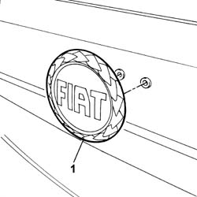

7055A83 BADGE on tailgate - R.R.
- Path
- Procedures > 70 FITTINGS > 7055 MOULDINGS ON PROTECTIONS > 7055A EXTERIOR MOULDINGS > 7055A83 BADGE on tailgate - R.R.
- Kind
- repair procedure (removal / refitting; the operation number is the code)
- Applies to
- all engines; all production periods
- Interactive page
- https://sloeber94.github.io/elrnDB-fPnd/en/#/2753304
Applies to: all engines; all production periods
 Removing
Removing
 Refitting
RefittingPlace adhesive tape on the tailgate by the edge of the badge.
1. Release the badge using a suitable tool and remove it.

Applies to: all engines; all production periods
Refitting
RemovingCheck the condition of the mounting pins.
If the badge is being reused, remove the residues of adhesive film and fit a new one.
Remove the protection on the adhesive film.
Place the badge in position.
Remove the adhesive tape positioned previously on the tailgate.